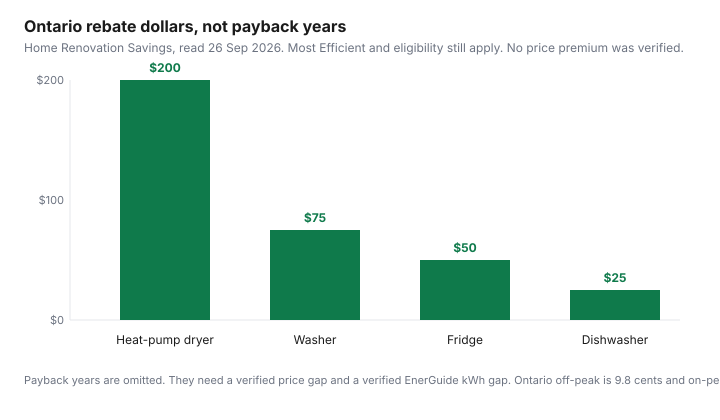

Household Items and Supplies · Canada
ENERGY STAR vs ENERGY STAR Most Efficient in Canada: Is the Premium Appliance Worth It?
ENERGY STAR Most Efficient is a shorter list than ENERGY STAR, and it is the list some rebates require. It is not, by itself, proof that the extra dollars come back. Payback is a subtraction and a division: price premium minus the rebate you can actually claim, divided by the yearly kilowatt-hour gap times your electricity rate. If either the premium or the kilowatt-hour gap is missing, the years are missing. This page will not invent them.
Reading the EnerGuide label is the label guide. What a dryer does to a winter bill after you own it is the dryer energy guide. This page is the purchase decision: premium, rebate, and rate. It is education, not a recommendation to buy a model.
Key takeaways
- NRCan’s Most Efficient page, opened 26 Sep 2026, says the 2025 designation recognizes the most efficient ENERGY STAR products in 2024, across 13 categories. Only some ENERGY STAR models earn it.
- Ontario Home Renovation Savings, same day: heat-pump dryer $200, washer $75, induction $150, fridge $50, freezer $50, dishwasher $25, for eligible Most Efficient models. Used or refurbished appliances do not qualify. Apply within 60 days.
- SaveEnergyNB annual in-store rebates run to 31 Mar 2027 on that page: washer $35, dryer $40, combination $60, heat-pump dryer $150, on tests that are not Ontario’s tests. Maximum 5 items per transaction.
- The OEB electricity-rates page opened 26 Sep 2026 lists time-of-use prices of 9.8, 15.7, and 20.3 cents per kWh, and tiered prices of 12.0 and 14.2 cents. Those are commodity rates, not a delivered bill.
- No matched pair of Canadian prices and EnerGuide kWh figures was opened, so this guide does not print a payback year. The formula is here. The years are yours to finish.
ENERGY STAR vs Most Efficient in Canada: what the designations mean
ENERGY STAR is the broader certification. Most Efficient is a yearly cut of that list. Natural Resources Canada’s Most Efficient page, opened 26 September 2026, says the 2025 designation recognizes the most efficient ENERGY STAR certified products in 2024 across 13 product categories, and that products meeting the 2025 criteria will deliver significant savings over conventional products. The page does not print a dollar or a kilowatt-hour for that sentence. “Significant” is not a payback. The same page says the Most Efficient listings, except windows and sliding glass doors, lead to pages owned by the U.S. Environmental Protection Agency, which maintains the information for NRCan. NRCan administers the name in Canada. The Government of Canada says it is not responsible for the accuracy of those EPA pages.
On the Canadian market in 2025, the page names standard and compact refrigerators and freezers among the recognized groups, and it says only certain ENERGY STAR certified products earn the designation each year. A machine with a standard ENERGY STAR sticker can be efficient and still miss the rebate that demands Most Efficient. Confirm the model number on NRCan’s searchable product list, which separates the two designations, before you treat a yellow sticker as the rebate. The rebate guide is the map of which provinces had a live amount on 26 September 2026.
Price premium vs rebate: Ontario HRSP example
The premium is the price of the Most Efficient model minus the price of the model you would actually buy instead, same capacity and same fuel, on the same day. A rebate reduces that gap only if the program will pay it on that receipt. Ontario’s Home Renovation Savings appliance page, read 26 September 2026, offers rebates on eligible ENERGY STAR Most Efficient appliances: $200 for a heat-pump clothes dryer, $75 for a washing machine, $150 for induction cooktops and ranges, $25 for a dishwasher, $50 for a fridge, and $50 for a freezer. The page says Most Efficient marks products that go above and beyond standard ENERGY STAR requirements.
The same page says you must be a residential customer connected to the Ontario electricity grid, you must be replacing an existing electric appliance, and you must buy a new eligible appliance. Used or refurbished appliances do not qualify. Cornwall Electric customers are excluded because they are connected to Hydro-Québec’s grid. You buy from any retailer, then upload the receipt within 60 days. An open-box or floor model is not defined on that page. Do not assume it qualifies because the box was opened at a store. The worked amounts, and the provinces this draft could not verify, are the rebate guide.
A rebate changes the numerator. Subtract the Ontario fridge rebate of $50 from the premium on the two listings in front of you, and only then divide. If you do not qualify, do not subtract it. No pair of fridge listings was opened for this draft, so this page does not invent a premium to finish the sum.
Payback math by appliance at provincial rates
Payback years equal the net premium divided by the annual dollar savings. Annual dollar savings equal the EnerGuide kilowatt-hour difference times your rate in dollars per kilowatt-hour. The rate that belongs in the formula is the commodity rate you actually pay for those kilowatt-hours, not a national average and not the whole bill. Delivery, regulatory charges, and tax sit outside the cents below.
The Ontario Energy Board electricity-rates page, opened 26 September 2026, lists time-of-use prices of 9.8 cents per kWh off-peak, 15.7 cents mid-peak, and 20.3 cents on-peak. Winter on that table is 1 November to 30 April. Summer is 1 May to 31 October. Weekends and holidays are off-peak all day. Ultra-low overnight is 3.9 cents from 11 p.m. to 7 a.m. Tiered prices on the same page are 12.0 cents for the residential first block and 14.2 cents above it. The first block is 1,000 kWh a month in the winter column and 600 kWh a month in the summer column. Which plan you are on is the TOU, tiered, and ultra-low overnight guide. A dryer that runs on-peak does not get the off-peak cent.
A second province’s cents were not on the page this draft could use as a rate. Hydro-Québec’s Rate D page, opened 26 September 2026, says the first 40 kWh per day in the billing period are at the lower price and the rest at the higher price, and it points to an electricity-rates PDF for the amounts. That PDF was not opened here, so no Québec cent is printed. Do not borrow a blog’s Rate D figure into this division. If you live outside Ontario, open your utility’s current rate page and use that cent. The formula does not change. The input does.
Worked shape, with the inputs labelled as blanks. Net premium is premium minus rebate. Savings are kilowatt-hour gap times rate. Years are net premium divided by savings. At Ontario off-peak, the rate is $0.098 per kWh. At Ontario on-peak, it is $0.203. A 100 kWh gap, which this guide did not measure on a label, would be $9.80 a year off-peak and $20.30 a year on-peak. Those two products are here so you can see the multiplication. They are not a fridge, a washer, or a dryer. Plug in the gap from the two EnerGuide labels you are comparing. If the gap is zero, the years are infinite and the premium is a feature purchase, not an energy purchase.
Where to find qualified-product lists (NRCan, utility sites)
Three lists get confused. NRCan’s searchable product list is the Canadian efficiency record: look up the model and see whether the row is ENERGY STAR or ENERGY STAR Most Efficient for the year the program names. The EPA pages linked from NRCan’s Most Efficient article are the recognition lists NRCan points to, with the caution printed on the Canadian page. The utility or program list is the one that pays. Ontario’s appliance page says “see qualified products list” beside the amounts. New Brunswick’s in-store page says eligible products will be marked in store.
SaveEnergyNB’s page, read 26 September 2026, takes the discount at the register. No coupon or mail-in is described. Annual in-store rebates are available until 31 March 2027. A washer must be ENERGY STAR, meet “Most Efficient 2022” criteria, and have a volume greater than 2.5 cubic feet, for $35 off. A dryer must be ENERGY STAR and use less than 100 kWh per cubic foot, for $40 off. A combination that meets both tests is $60 off. A heat-pump dryer that is ENERGY STAR and uses 100 kWh per cubic foot of drum capacity per year or less is $150 off. The maximum is 5 items per transaction. Seasonal offers on that page, for dimmers, sensors, and thermostats, end 22 November 2026. Those seasonal rows are not the appliance rows. Do not carry Ontario’s $200 into a New Brunswick aisle, and do not carry “Most Efficient 2022” into Ontario’s current wording.
When a standard model is the smarter buy
Buy the standard model when the Most Efficient model fails a constraint the kilowatt-hours do not fix. The opening is the wrong width. The dryer needs a vent you are not allowed to change. The cooktop is gas and the rebate is for induction. The household will move before a long payback, and you cannot say the next tenant inherits your receipt. The rebate page requires an address on the Ontario grid and a new appliance replacing an electric one. If you fail that test, the premium is yours alone.
Buy the standard model when the two EnerGuide numbers are close and the price gap is not. A small kilowatt-hour gap at 9.8 cents does not repay a large premium inside a normal ownership stretch. The label guide shows how to read the number for the same class and size. Comparing a compact fridge with a full-size fridge is not a payback. It is two different machines. A heat-pump dryer that will not fit, or that you will not wait for, is the dryer guide’s constraint, not a reason to ignore the $200 Ontario figure if you do qualify and the machine does fit.
Payback table and SVG chart
The table keeps every verified dollar and leaves the payback cell blank where a listing was not opened. Filling it with a guessed premium would look like a result. It would be a fiction.
| Appliance | Ontario rebate | New Brunswick in-store | Price premium | Annual kWh gap | Payback at 9.8¢ and at 20.3¢ |
|---|---|---|---|---|---|
| Heat-pump dryer | $200. Most Efficient. New. Replacing electric. | $150 if ENERGY STAR and at or under 100 kWh per cubic foot per year. | Not on a listing opened 26 Sep 2026. | Not on an EnerGuide pair opened 26 Sep 2026. | Cannot divide. Net premium and kWh gap are both missing. |
| Washer | $75. Most Efficient. New. Replacing electric. | $35 if ENERGY STAR, Most Efficient 2022, volume over 2.5 cu. ft. | Not on a listing opened 26 Sep 2026. | Not on an EnerGuide pair opened 26 Sep 2026. | Cannot divide. |
| Fridge | $50. Most Efficient. New. Replacing electric. | No fridge amount on the in-store page opened 26 Sep 2026. | Not on a listing opened 26 Sep 2026. | Not on an EnerGuide pair opened 26 Sep 2026. | Cannot divide. |
| Dishwasher | $25. Most Efficient. New. Replacing electric. | No dishwasher amount on the in-store page opened 26 Sep 2026. | Not on a listing opened 26 Sep 2026. | Not on an EnerGuide pair opened 26 Sep 2026. | Cannot divide. |
How to finish a row when you are in the aisle. Write the two prices. Subtract. Subtract the rebate only if the model is on that program’s list and your receipt will qualify. Read both EnerGuide labels and subtract. Multiply the kilowatt-hour gap by $0.098 if those loads will sit in Ontario off-peak, or by $0.203 if they will sit on-peak, or by the tiered cent if that is your plan. Divide the net premium by that annual dollar figure. If you dry on a mix of periods, do the multiplication twice and keep the slower payback as the cautious one. Hydro-Québec’s page confirmed the 40 kWh-per-day split and did not confirm a cent, so a Québec row waits on the rates PDF.

Sources & date stamps
- Natural Resources Canada, ENERGY STAR Most Efficient, opened 26 Sep 2026. 2025 designation recognizes the most efficient ENERGY STAR products in 2024 across 13 categories. Only certain ENERGY STAR models earn it. EPA maintains the linked product pages for NRCan.
- Home Renovation Savings, appliances, read 26 Sep 2026. $200 heat-pump dryer, $75 washer, $150 induction, $25 dishwasher, $50 fridge, $50 freezer. New Most Efficient models. Used or refurbished do not qualify. Receipt within 60 days. Cornwall Electric excluded.
- SaveEnergyNB in-store rebates, read 26 Sep 2026. Annual offers until 31 Mar 2027. Washer $35, dryer $40, combination $60, heat-pump dryer $150, with the tests in the table. Maximum 5 items per transaction. Seasonal rows end 22 Nov 2026.
- Ontario Energy Board electricity-rates page, opened 26 Sep 2026. Time-of-use 9.8, 15.7, and 20.3 cents per kWh. Tiered 12.0 and 14.2 cents. Ultra-low overnight 3.9 cents. Commodity rates, not the delivered bill.
- Hydro-Québec Rate D page, opened 26 Sep 2026. First 40 kWh per day in the billing period at the lower price. Cent amounts were on a PDF this draft did not open.
Frequently asked questions
What is ENERGY STAR Most Efficient?
It is a yearly designation for some ENERGY STAR models, not a second logo that every efficient appliance earns. Natural Resources Canada’s Most Efficient page, opened 26 September 2026, says the 2025 designation recognizes the most efficient ENERGY STAR certified products in 2024 across 13 categories. Only certain ENERGY STAR models earn it. A standard ENERGY STAR label is not the same line.
Is the Most Efficient premium worth paying?
Only after you subtract any rebate you actually qualify for from the price difference, then divide by the kilowatt-hour gap times your rate. This draft did not open a matched pair of Canadian listings with both a price and an EnerGuide kilowatt-hour figure, so it does not print a payback year. The worksheet below is the test. The label guide is where you read the kilowatt-hours.
Does a rebate change the payback?
Yes, when you qualify. Ontario’s Home Renovation Savings page, read 26 September 2026, lists a heat-pump dryer at $200 and a fridge at $50 for eligible Most Efficient models, and it says used or refurbished units do not qualify. New Brunswick’s in-store page lists different tests and different dollars, taken at the register. A rebate you cannot claim does not enter the subtraction.
Where do I find qualified models?
Start with Natural Resources Canada’s searchable product list and the program page that is paying you. Ontario’s appliance page points you at a qualified list and requires Most Efficient. New Brunswick’s washer row, on the page read 26 September 2026, still says Most Efficient 2022 plus a volume test. Match the program’s words, not a similar badge.
When is a standard model the smarter buy?
When the price gap is large, you will not qualify for the rebate, or the kilowatt-hour gap on the two EnerGuide labels is small at your rate. A standard ENERGY STAR model can also be the right buy when the Most Efficient model does not fit the opening, the fuel, or the vent you already have. Efficiency does not repair a bad fit.